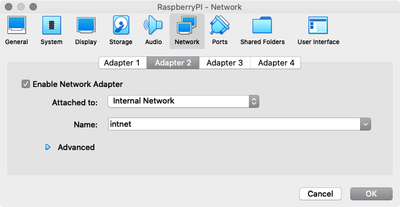

The overall goal of this lab. is to consolidate knowledge on IP addressing and subnets. This will be achieved using available networking tools in Linux to manage a simple Raspberry Pi network.
After this lab you will be able to:
Understand and apply basic binary arithmetic
Understand IP addresses and their organisation into subnets
Create and configure Local Area Networks (LANs)
Use basic Linux commands for managing:
IP addresses (IPv4 and IPv6)
IP subnets and masks
Pre-requisites for today
Before continuing please check these two steps:
Make sure you have at least 20GB of disk space.
Confirm that you’ve downloaded the new VM image (link).
Importing and configuring the Ubuntu VM
Start by importing the newly downloaded VM just like you did for the RaspberryPI.
After the import is completed (it will take a few minutes), configure the settings of the new VM according to your computer specifications (for example, my laptop has only 8GB RAM so I configured my VM with 4GB). You shouldn’t use all the resources from your host machine in your VM as it can make things become less responsive.
Inside the VM settings go to Network->Adapter 2 and configure it to be attached to an “Internal Network” as shown in the figure below.
Add a second adapter to the RaspberryPI VM, attach it to the same “Internal Network”.

You can think of an “internal network” as a cable directly connecting VMs. This means they don’t connect to the Internet or have any other features such as DHCP or NAT.
Another tip, if you want to access the Ubuntu VM through ssh (recommended) remember to add port forwarding on adapter one and choose a different Host port such as 2223.
Lab. Exercises
Please read each exercise entirely before starting to solve it.
Remember you should deliver a report after the networking module is finished. It should include the main commands and configurations necessary to complete each exercise. Do not forget to take notes while solving the exercises so you do not have to repeat them.
These exercises should be completed in teams.
Quick overview of IP addresses
By now you’ve already seen that IP addresses are an important part of the Internet and computer networks in general. Before looking into more complicated setups, complete the following tasks and remember to include them in your report.
Start by finding the IP address of <ntnu.no>. For this you can use the command host.
Convert the found IP address to binary (you can use external tools!).
How many bytes does this IP address contain?
How many bits are there between each point (full stop) in the address 192.168.0.13?
Start your report now and keep updating it as you go! It doesn’t have to look pretty but if you keep everything now (screenshots, notes, …) you don’t have to repeat it later.
Networking two computers (VMs)
The main goal of this exercise is to create a simple network between the two VMs through a simple network configuration as if they were connected by an Ethernet cable.
Remember you can edit configurations by directly using the VMs or, instead by simply using ssh from your host machine where you can have one or more terminals per VM.
Configuring the network interfaces
—> On your RPi VM
Try the following steps:
Using the command ip addr show dev eth1 find out your current IP address, if any, on ‘eth1’
Type ip addr help to see all the available options
Let’s now remove any unwanted address or routes on ‘eth1’ with the command:
Note: you should avoid the subnet 10.0.2.0/24 as it already being used on ‘eth0’.
Using the command ip a s eth1 (same as in step 1 but shorter) to verify your IP address, it should be the one you have just set.
Use the command ip link set up dev eth1 to “turn on” the interface, in case it is down.
—> On your Ubuntu VM
Repeat the configurations above, paying attention to the different interface notation and assigning a new IP address:
Remove any address/route on the interface ‘enp0s8’ (e-n-p-zero-s-eight).
Add a different IP address and mask to the interface ‘enp0s8’ such that it is in the same subnet as ‘eth1’ on the RPi.
Use the command ip l s up dev enp0s8 to set the interface to “UP”.
How many addresses does the chosen subnet contain?
Remember that one IP address can only be used by a single interface in the same network! It should be unique.
The size of the subnet depends on the number of bits used on the corresponding mask.
Spoiler alert! Before clicking the box below try to solve the exercise on your own but of course you are free to check it out.
You can use “any” private IP address in the ranges:
10.0.0.0/8
172.16.0.0/12
192.168.0.0/16
Note: you can’t use the first nor the last IP address of a network/subnet. So, for example, for the network 10.12.1.0/24 you cannot use the addresses 10.12.1.0 nor 10.12.1.255 (remember that /24 corresponds to an 8 bit mask or 255.255.255.0).
An example of a pair of IP addresses and masks could be “10.100.2.1/30” and “10.100.2.2/30”.
Remember: you need to have “root” privileges in order to change/add an IP address.
Verifying your configurations
After configuring the two VMs continue with the following steps:
On one of the VMs use the command ip route to see the added route. Which one is the new entry?
Verify that both nodes have connectivity with the ping command. First from the RPi and afterwards from the Ubuntu machine.
Make sure you can connect to the RPi from the Ubuntu machine using ssh.
From one of the VMs ping <ntnu.no>. What’s the main difference in behaviour that you can see?
Spoiler ahead…
Use the command ping like this to generate only 4 ICMP messages.
The goal of this task is to get more comfortable with subnets and masks and see how they work in practice. If you have questions about why something happens, or does not happen, feel free to ask!
—> On your RPi VM
Change the IP address of ‘eth1’ to 10.10.10.30 using the mask 255.255.255.192 (first add a new address then delete the previous one).
Verify if you still have connectivity and discuss why or why not.
You may lose connectivity at this point depending on the IP addresses you have previously chosen.
—> On your Ubuntu VM
Now, on your Ubuntu VM make the following changes:
Change the IP address of ‘enp0s8’ to 10.10.10.5 using the mask 255.255.255.192 (first add a new address then delete the previous one).
Check for changes in connectivity between the two VMs. Can one VM still ping the other?
Using the same IP address change the mask to ‘/30’.
Check for changes in connectivity between the two VMs.
Using the same IP address, what is the smallest subnet size, and corresponding mask, that you can use to maintain connectivity between the two VMs? Why?
About the report You don’t have to include all the commands you needed to type, it is enough to discuss/explain the changes in connectivity and the choices you made.
Static IP addresses
In order to permanently save your IP configuration, so that they are persistent even after a reboot, you need to save it. However, this is done differently in different Linux systems. Below you’ll see how to do it in Raspbian and Ubuntu.
—> On your RPi VM
To save your settings you need to edit the “dhcpcd.conf” file in /etc/ (don’t forget to check if you have permissions). Edit this file and reboot to check the networking configurations have remained.
To save your settings you need to edit the “01-network-manager-all.yaml” file in /etc/netplan. After editing you can apply your changes with the command sudo netplan apply:
Now, your RPi VM directly (on another terminal window), set the ‘eth1’ interface down (ip l s eth1 down) and wait for an error message on your ssh connection (it should take less than 1 min.).
After the error message, set ‘eth1’ up again, re-establish the ssh session and verify if the command is still running using the ps command.
Find a way to repeat the “Alive” command in the RPi making sure it is not interrupted if the connection fails (this will require some research or check the hint below).
If a command such as ps outputs too much information you can use the Unix pipeline principles to manage the output. For example ps aux | grep desired_pattern.
If you couldn’t figure out step 6. above you can see a hint below.
To keep programs running even if there’s a connection interruption you can use the commands screen, tmux or simply run them on the background.
Teamwork 2
In case you haven’t been in class yesterday continue with a reflection on teamwork.